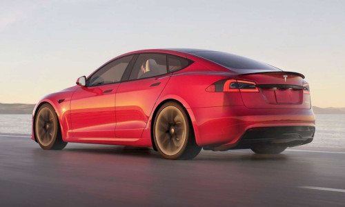
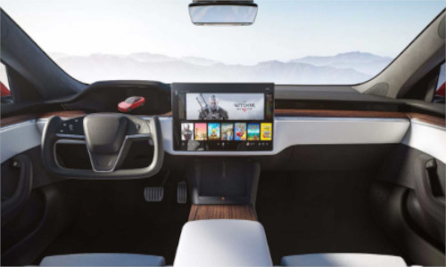
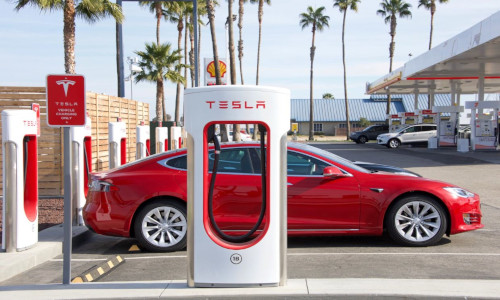

Sobre o Modelo S, a revolução de Elon Musk
O Model S é um sedan esportivo elétrico produzido pela Tesla e foi lançado nos Estados Unidos em junho de 2012. Segundo a agência EPA, o carro elétrico pode andar 426 km num único carregamento de seu pack de bateria de 85 kWh, atingindo assim a maior autonomia de qualquer carro elétrico disponível no mundo. O Tesla Model S é um fastback por estilo e proposta de carroceria, ainda que seja descrito como sedã ou mesmo hatchback. A frente tem faróis adaptativos full LED com luzes diurnas em LED. A grade em forma de “T” tem o logotipo da Tesla.
Está equipado com inteligência artificial e consegue se antecipar aos movimentos do motorista em várias situações que possam oferecer risco de acidentes.
Saiba mais...Assentos aquecidos para todos os passsageiros, porta-copos deslizantes, apoio de braço central removível com armazenamento integrado
Saiba mais...Não há alavancas na coluna de direção e os comandos por botões par a acionar os indicadores das luzes de direção, faróis e limpadores de pára-brisa.
Saiba mais...Assista o vídeo para saber mais sobre o Modelo S...
Mais de 1.000 cv de potência. Conheça o TESLA MODEL S PLAID no Canal Osten com André Bittar
Falando um pouco do visual externo, os novos Model S e Model X passaram por atualizações sutis ganhando para-choques redesenhados e novos frisos e apliques externos escurecidos no lugar dos cromados, uma mudança vista recentemente no irmão menor Model 3. Ambos os modelos também passaram por atualizações em termos de motores e baterias, mas a Tesla ainda não detalhou essas modificações. A autonomia de 840 km do Model S Plaid + é um destaque, provavelmente pelo uso das novas células 4680, embora a Tesla ainda não tenha confirmado isso de forma oficial. Sempre que engata a marcha-atrás, o ecrã tátil apresenta a vista da câmara. As linhas mostram-lhe o itinerário de condução com base na posição do volante. Estas linhas ajustam-se à medida que desloca o volante.
Esse volante que adota um estilo borboleta tem como características a ausência da parte superior do aro e uma base achatada que remete ao componente usado na aviação. A Tesla chama isso de direção "yoke": "O foco final na direção: sem talos, sem deslocamento. Com um manche de direção sem haste, você pode desfrutar do melhor carro para dirigir e do melhor carro para se dirigir. Quando o Model S está em andamento (ou pronto a conduzir), o painel de instrumentos apresenta o estado de condução atual e uma visualização em tempo real da estrada, conforme detetado pelos componentes de piloto automático. A visualização é automaticamente ampliada e reduzida conforme necessário para informar quando um veículo é detetado no seu ângulo morto.
O conector de parede da Tesla, instalado no seu espaço de estacionamento, é a forma mais rápida de carregar o Model S durante a utilização diária.Na maioria das regiões de mercado, o Model S está equipado com um conector móvel e com os adaptadores necessários para o ligar às tomadas de alimentação mais comumente utilizadas. Ao utilizar o conector móvel, comece por ligá-lo a uma tomada de alimentação, ligue a um adaptador (se necessário) e, em seguida, ligue ao Model S. Model S tem um dos sistemas de bateria mais sofisticados do mundo. O mais importante para preservar a bateria de alta tensão é DEIXAR O SEU VEÍCULO LIGADO À CORRENTE quando não o estiver a utilizar. Isto é particularmente importante se não estiver a planear conduzir o Model S durante várias semanas.
